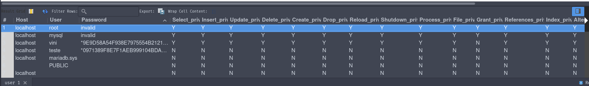

Anterior: Auxilar na administração de banco de dados Proxima: Senac: Recuperação de dados - backup e restore Raiz: Auxilar na administração de banco de dados
O conceito de segurança de computadores está diretamente relacionado ao de segurança da informação, incluindo não apenas a proteção de dados e informações, mas também a proteção de sistemas e bancos de dados.
Ao instalar um banco de dados é criado um usuário root, que possui acesso a todo o banco. No entanto, em algum momento, pode ser necessário conceder acesso do banco de dados a outra pessoa ou aplicativo.
Como o acesso ao banco de dados é necessário para o desenvolvimento do sistema, cabe ao administrador de banco de dados passar as credenciais de acesso para a equipe de desenvolvimento. Porém, fornecer as credenciais do usuário root pode comprometer todos os registros e as configurações do banco de dados[…]
Sendo assim, para conceder acesso a um banco de dados é necessário criar novos usuários
CREATE USER 'usuario'@'endereco' IDENTIFIED BY 'senha' Destrinchando
Exemplificando: criando um novo usuário no banco de dados local
CREATE USER 'teste'@'localhost' IDENTIFIED BY 'q1w2e3r4' SELECT User FROM mysql.user; | User |
|---|
| PUBLIC |
| mariadb.sys |
| mysql |
| root |
| teste |
| vini |

Entendendo a tabela de usuários
Apesar de não ser recomendado é possivel fazer a exclusão de usuários. Veja a seguir a sintaxe básica:
DROP USER 'usuario'@'endereco';Além de criar um usuário é necessário atribuir a ele privilégios.
Note que são muitas as permissões que podem ser concedidas ou revogadas a um usuário, e a definição dessas permissões dependerá do tipo de usuário com o qual você estará trabalhando. Se você estiver criando uma conta de um administrador, por exemplo, o ideal é que ela tenha a maioria das permissões concedidas. Já para um usuário comum, algumas permissões de manipulação de dados e de manipulação de tabela já seriam suficientes.
Para conceder privilégios a um usuário utiliza-se o comando GRANT e para revogar privilégios o comando REVOKE
Considerando a segurança do banco de dados, é comum administradores criarem um novo usuário com todas as permissões e revogar os privilegios da conta root
GRANT
A função GRANT pode conceder todos os privilégios que um dado usuário possui para outro usuário. Veja a sintaxe básica
GRANT privilegios ON nome_banco.nome_tabela TO usuario@endereco;Para garantir função de administrador a uma conta a sintaxe é um pouco diferente
GRANT ALL PRIVILEGES ON *.* TO 'usuario'@'endereco'Após conceder privilégios a um usuário é necessário atualizar as permissões do banco de dados. Para isso é utilizado o comando FLUSH:
FLUSH PRIVILEGES;Permissões mais comuns
Exemplificando: Concedendo privilégios de dados para a conta teste criada anteriormente
GRANT CREATE, SELECT, INSERT, UPDATE ON *.* TO 'teste'@'localhost'Verificacndo:
SELECT User, Create_priv, Select_priv, Insert_priv, Update_priv FROM mysql.user WHERE User = 'teste' Observações: Perceba que o usuário 'teste' não possui permissão de deleção de dados, veja o que acontece se, logados como teste, tentamos deletar algum dado na tabela 'super' (tabela super foi criada na [UC03] mais precisamente em Consulta de dados)
Input:
DELETE FROM Produto WHERE id=1Output:
ERROR 1142 (42000) at line 2: DELETE command denied to user 'teste'@'localhost' for table `super`.`Produto`
Vizualizando privilégios de outra maneira
Uma outra forma de vizualizar os privilégios é usando o comando SHOW GRANTS. Veja a sintaxe básica:
SHOW GRANTS; -- Mostra os privilegios para o usuário atual;
-- Ou
SHOW GRANTS FOR 'usuario'@'endereco';SHOW GRANTS;Grants for vini@localhost
GRANT ALL PRIVILEGES ON *.* TO `vini`@`localhost` IDENTIFIED BY PASSWORD '*****************************************' WITH GRANT OPTION
GRANT SELECT, INSERT, UPDATE, DELETE, CREATE, DROP, REFERENCES, INDEX, ALTER, CREATE TEMPORARY TABLES, LOCK TABLES, CREATE VIEW, SHOW VIEW, CREATE ROUTINE, EVENT, TRIGGER, DELETE HISTORY ON `test`.* TO PUBLIC
GRANT SELECT, INSERT, UPDATE, DELETE, CREATE, DROP, REFERENCES, INDEX, ALTER, CREATE TEMPORARY TABLES, LOCK TABLES, CREATE VIEW, SHOW VIEW, CREATE ROUTINE, EVENT, TRIGGER, DELETE HISTORY ON `test\\_%`.* TO PUBLIC
Exemplo 2: Usuário teste@localhost
SHOW GRANTS FOR 'teste'@'localhost'Grants for teste@localhost
GRANT SELECT, INSERT, UPDATE, CREATE ON *.* TO `teste`@`localhost` IDENTIFIED BY PASSWORD '*0971389F8E7F1AEB999104BDA7A0FA145087F348'
REVOKE privilegios ON nome_banco.nome_tabela FROM 'usuario'@'endereco';REVOKE ALL PRIVILEGES ON *.* FROM 'teste'@'localhost';
FLUSH PRIVILEGES;SHOW GRANTS FOR 'teste'@'localhost' Grants for teste@localhost
GRANT USAGE ON *.* TO `teste`@`localhost` IDENTIFIED BY PASSWORD '*0971389F8E7F1AEB999104BDA7A0FA145087F348'